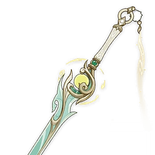
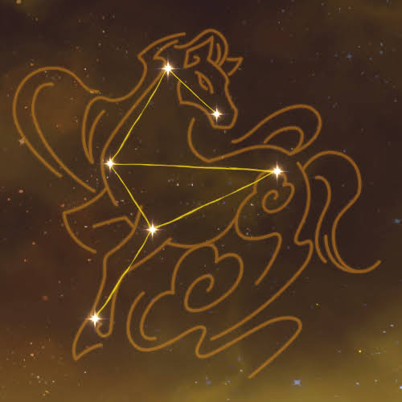

Zibaipédia
Columbina
Linnea
Columbina
Linnea

Zibai é uma deusa e Adeptus conhecida em Liyue como a Adeptus do Cavalo Branco. Há 6.000 anos, ela foi morta na destruição de Lang-Gan, e Istaroth dividiu sua alma em três partes: Ziju, Zizhi e Zijiao.

Lightbearing Moonshard
Night of Sky Revelation

Constellations
Ver demonstração de DPS